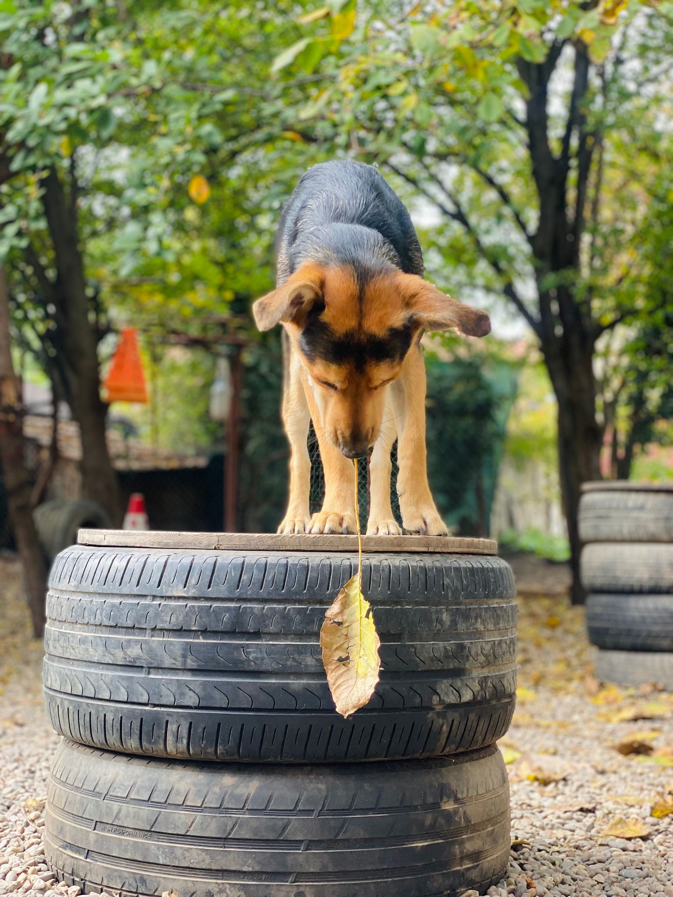
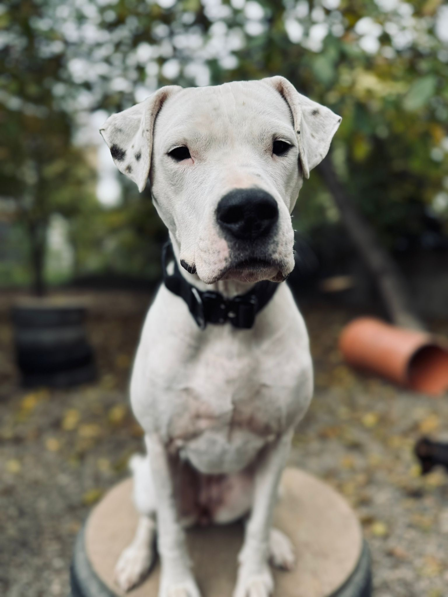
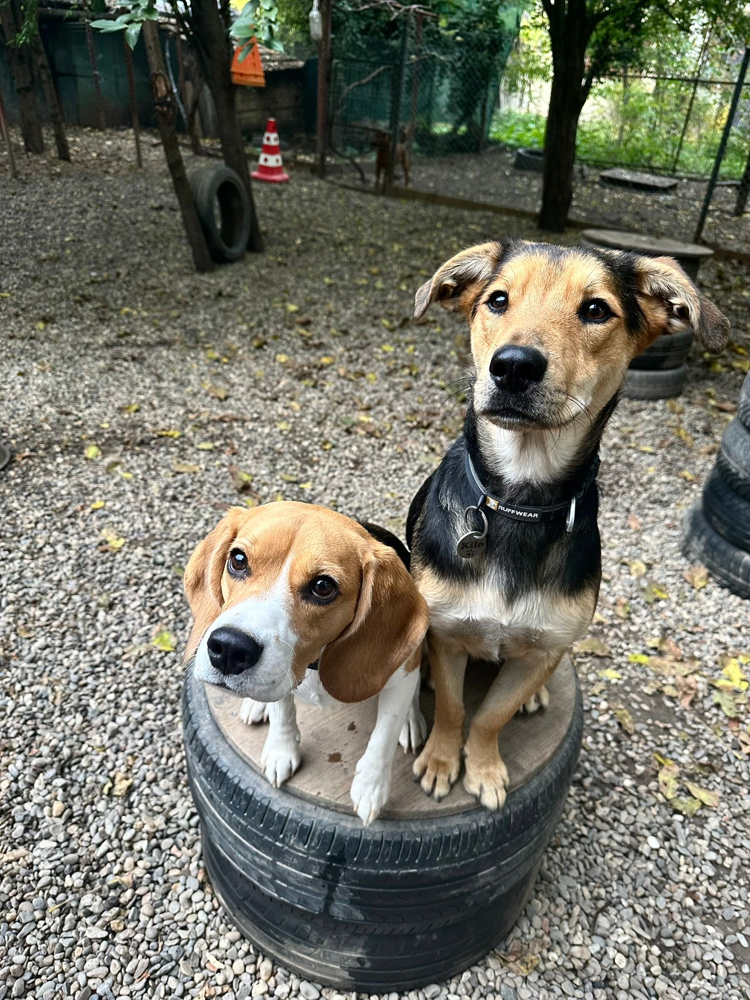
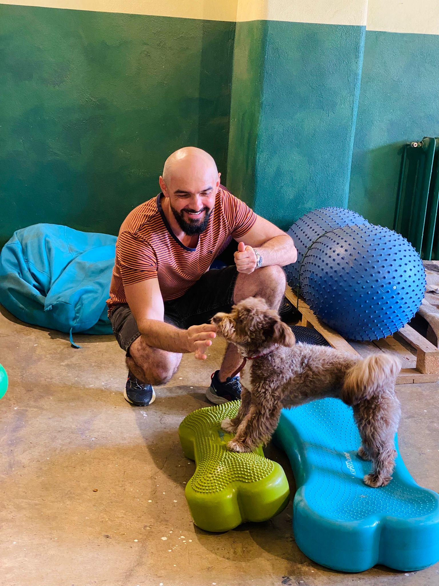

🐾🐾🐾🐾🐾🐾
Misiunea Programului
Misiunea Programului de Sociointegrare Canină este de a reda câinilor din adăpost șansa la o viață echilibrată și sigură în comunitate.
Obiective
- Reabilitare comportamentală
- Creșterea șanselor de adopție
- Reducerea abandonului
Grup țintă
- Câini din adăpost
- Adoptatori
- Voluntari
- Comunitatea locală
Durata
Program permanent, organizat în cicluri de 3–6 luni.

🐾🐾🐾🐾
Etapele Programului
- Etapa I – Evaluare și triere
Examinare veterinară, evaluare comportamentală și întocmirea fișei individuale pentru fiecare câine. - Etapa II – Reabilitare comportamentală
Dresaj de bază, socializare și terapie prin joacă, adaptate nivelului și nevoilor fiecărui câine. - Etapa III – Pregătire pentru adopție
Obișnuirea cu mediul de apartament, rutine zilnice și promovarea câinilor pentru adopție responsabilă. - Etapa IV – Educarea comunității
Campanii în școli, zile deschise și workshop-uri pentru creșterea responsabilității și a informării publicului. - Etapa V – Adopție și monitorizare
Contract de adopție, perioadă de probă și monitorizare post-adopție pentru a asigura integrarea pe termen lung.

🐾🐾🐾🐾🐾🐾
Implementare
Resurse
- Medic veterinar
- Dresor
- Voluntari
Indicatori
- Creșterea adopțiilor
- Reducerea agresivității
- Implicare comunitară
Beneficii
- Câini echilibrați
- Comunitate mai sigură
- Responsabilitate socială

Contact

Coordonator: Titus Pal
Telefon: 0754 888 320